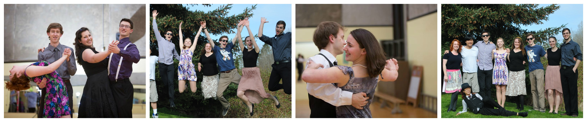

Executive
The UVic Ballroom Dance Club is run by a group of volunteer students. They hire professional instructors to teach classes, they plan events and workshops. If you are interested in joining the executive and helping run the club, please talk to one of the executives or email us at ballroom@uvicdance.com!
President - Katrina Annett
Vice President - Christopher Papke

In my first year of university, I joined the UVic Ballroom Dance Club, and I can suggest that you do to. Before joining the club, I had never done Ballroom Dancing before, but the club was very welcoming and I had lots of fun learning the different types of dance. I also made many friends in the club and I am happy to now be helping out with the Club. I hope that everyone considers joining the Ballroom Dance Club, as it is a great experience!
Communications - Maya Pereira
Despite being involved in jazz band before joining the Ballroom club, I’d never learned how to dance to the music I’d so often played. In my first year of university I found the club to be a great way to meet new people, step out of my comfort zone, and become part of a warm community. There’s something in dance for everyone, in addition to a skill that surpasses the ages.
Events Coordinator - Adair Ng
I waited until my second year at UVic to join Ballroom and I wish I had joined sooner! Prior to joining the club, my dance experience consisted solely of line dancing and two stepping. But everyone was so welcoming and it didn't take long for me to fall in love with both Ballroom and Salsa. Now, hopefully I'll have the chance to welcome you to the club this year!
Social Media - Siena McIlwraith-Fraticelti
I transferred to UVic as a second year student last year and joined the club as a way to meet new people and try new things. I had no previous ballroom experience and was only familiar with Lindy Hop. I can honestly say joining this club was one of the best decisions I’ve ever made. I’ve met some very interesting, fun people and have learned so much about myself in the process. This club is incredibly inclusive and it caters to dancers of all levels. Once you join this club you will be part of a community who loves meeting new people and share their love of dance. I look forward to meeting you all!
Treasurer - Tyson Foster

This is my third year in the club and my first as part of the exec. I first joined the club to try something completely new to me. I had zero dancing experience before joining the club, but since then I've learned a lot and enjoyed it all the while, and I'm happy to now have the opportunity to give back to the club. Regardless of skill level, the club is a great place to come and have a good time. I hope to see you on the dance floor!
Equipment Manager - James Sease
I joined the UVic Ballroom Dance Club in my first semester. Before joining the club, I had danced ballet
and musical theater, but it was the first time I tried social dancing, and I'm glad that I did. The more
I learn about dance, the more I enjoy it, and I predict that you will too. The Ballroom Dance Club is filled
with a wonderful and diverse group of people who would like to be your friend. Join us and dance away the
stress of school!
There are short-cuts to happines, and dancing is one of them. - Vicki Baum
Hi everyone!
I joined the UVic ballroom dance club during my first year at the University of Victoria and I am extremely glad that I did. The UVic ballroom dance club has given me the opportunity to meet some really amazing people, have lots of fun, and learn a lifelong skill. Other than a few childhood dance classes, I had not done much dancing before I joined the club. Anyone with any level of dancing experience is welcome. I hope to see you out on the dance floor!